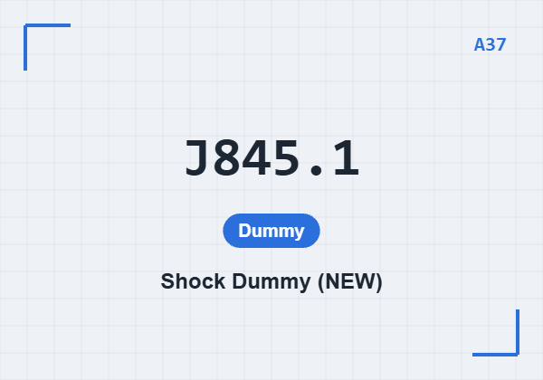
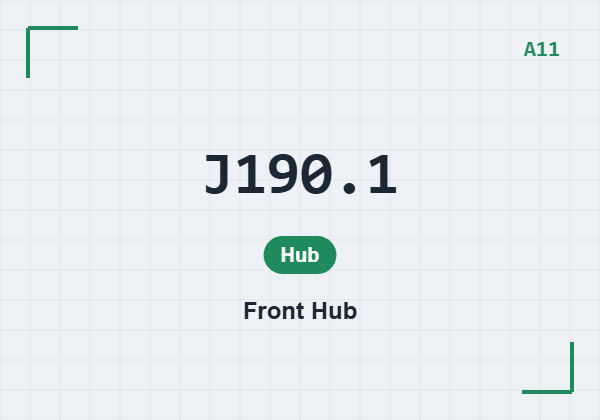
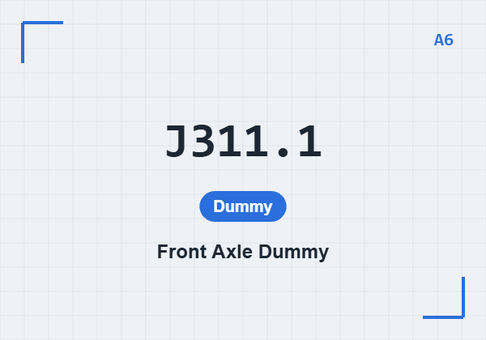
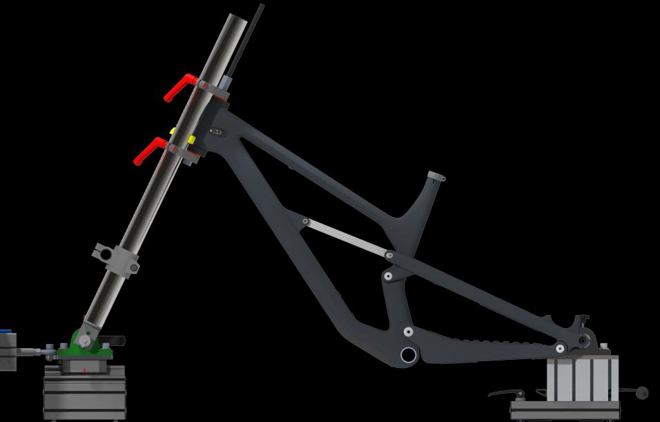

在登入頁選 「供應商」 分頁，點選貴公司（本教學用 DEMO），輸入專屬 存取碼 後按「登入系統」。資料依公司分開儲存並即時同步雲端。On the login page choose the Supplier tab, select your company (this guide uses DEMO), enter your access code and press "Log in". Data is stored per company and synced live.
登入後導覽列左側有 「目前專案」。你只會看到管理員分配給 DEMO 的產品代號與其涵蓋的測試——沒被分配的一律不顯示，制具與設備需求也不會出現。After login the nav shows Current projects on the left. You only see the product codes assigned to DEMO and their tests — anything not assigned to you is hidden, and so are its fixtures and equipment.




點導覽列 「制具總覽」，可看到每個制具反查用在哪些測試、總需求件數與目前庫存狀態。用編號或名稱即時搜尋。Open Fixtures in the nav to reverse-look-up every fixture: which tests use it, total demand, and current stock. Search by code or name.
導覽列 「設備盤點」 頁列出每項設備用在哪些測試。需求量為所有測試的 最高單次用量（設備共用、不累加）。The Equipment page lists which tests use each machine. Demand is the peak per-test usage across all tests (shared, not summed).
在 「庫存盤點」 頁，每個制具用 ＋／－ 或直接輸入實際數量。需求為累加；不足會標記短缺。輸入即自動儲存並同步。On Stock-take, set each fixture's actual quantity with ＋／− or typing. Demand is summed; shortfalls are flagged. Entries auto-save and sync.
在 「設備盤點」 頁輸入各設備的實際數量。需求＝所有測試的 最高用量（設備可共用，不累加）。同樣即時儲存並同步。On the Equipment page enter each machine's actual quantity. Demand = the peak usage across all tests (shared, not summed). Auto-saves and syncs.